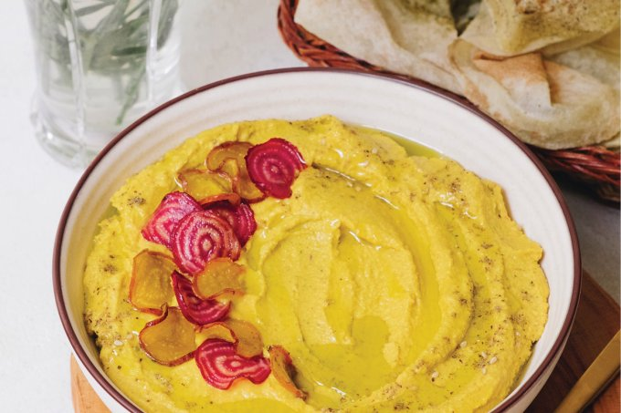

Homus de beterraba amarela

Tempo de preparo: 15 minutos
Rende: Até 4 porções
Ingredientes
- 1 lata de grão-de-bico cozido, escorrido e sem casca
- 1 beterraba amarela grande, descascada e cortada em quatro
- Suco de 2 limões
- 2 dentes de alho
- 1 colher (chá) de sal
- 1 colher (sopa) de melaço de cana ou de romã
- 1/2 colher (chá) de cúrcuma em pó
- 1/4 de xícara de tahine
- 2 colheres (sopa) de azeite Zaatar
- azeite para finalizar
Modo de Preparo
- Em um processador, bata o grão-de-bico até formar uma pasta bem grossa. Adicione a beterraba e continue batendo. Adicione o suco de limão, o alho, o sal, o melaço, a cúrcuma, o tahine e o azeite. Bata mais uma vez e adicione 1/2 xícara de água gelada aos poucos, ou o quanto for necessário para deixar a textura mais aveludada. Ajuste o sal e o limão. Transfira para uma tigela e finalize com zaatar e azeite.